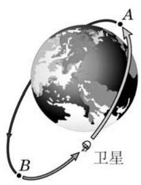
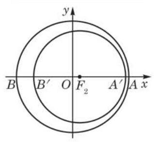
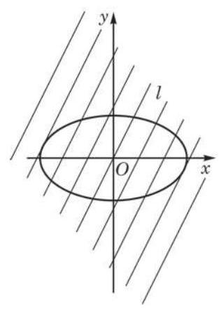

例题 1例 1 已知椭圆的焦距是 6 , 椭圆上的一点到两个焦点的距离之和等于 10 . 求椭圆的标准方程. 教材 L767–768答案与解析收起 / 展开解 因为 ,即 ,所以 当焦点在 轴上时,得椭圆的标准方程为 当焦点在 轴上时,得椭圆的标准方程为 故椭圆的标准方程为 或 . 教材 L769–788
例题 2例 2 求焦点在 轴上，焦距为 ，且过点 的椭圆的标准方程. 教材 L789–790答案与解析收起 / 展开解 因为椭圆焦点在 轴上,所以设其方程为 由 ,得 ,因此 又由于椭圆过点 ,因此 求解上述二式组成的联立方程组,得 . 因此，所求椭圆的标准方程为 . 教材 L791–812
练习2.2(1) · 1 分别写出满足下列条件的动点 的轨迹方程: (1)点 到点 、 的距离之和为 10 ； (2)点 到点 、 的距离之和为 12； (3)点 到点 、 的距离之和为 8 . 教材 L815–822答案与解析收起 / 展开 (1) . (2) . (3) . 教参 L1070–1071
练习2.2(1) · 2 分别写出满足下列条件的椭圆的标准方程: (1)焦点在 轴上，焦距为 ，且经过点 ； (2)焦距为 4，且经过点 . 教材 L823–828答案与解析收起 / 展开 (1) . (2) 或 . 教参 L1072–1073
例题 3例 3 求椭圆 的长轴和短轴的长、离心率以及焦点和顶点的坐标. 教材 L901–902答案与解析收起 / 展开解 将给定的椭圆方程化成标准方程 这里 . 所以，椭圆的长轴和短轴的长分别是 10 和 6，离心率 ， 两个焦点在 轴上,它们的坐标分别是 和 ,四个顶点的坐标分别是 . 教材 L903–912
练习2.2(2) · 1 已知下列椭圆的方程，分别求椭圆的长轴长、短轴长、焦点坐标和顶点坐标: (1) (2) . 教材 L915–918答案与解析收起 / 展开1.(1)长轴长 4,短轴长 ,焦点坐标为 、 ,顶点坐标为 、 (2)长轴长 10,短轴长 4,焦点坐标为 、 ,顶点坐标为 , . 教参 L1076–1079
练习2.2(2) · 2 用离心率作为指标衡量, 下列每组两个椭圆中哪一个更接近圆? (1) 与 ；___ (2) 与 . 教材 L919–924答案与解析收起 / 展开2.(1)第 2 个椭圆更接近于圆. (2)第 2 个椭圆更接近于圆. 教参 L1080–1081
例题 4例 4 我国发射的第一颗人造地球卫星，它的运行轨道是以地球的中心 为一个焦点的椭圆,椭圆长轴的两个端点 、 分别为近地点和远地点,如图 2-2-7 所示. 卫星在近地点 与地球表面的距离约为 ,在远地点 与地球表面的距离约为 ,地球中心与 在同一直线上. 已知地球的半径 约为 . 以 为单位,建立适当的平面直角坐标系, 求卫星轨道的方程. (结果精确到 )  图 2-2-7 教材 L927–932答案与解析收起 / 展开解 如图 2-2-8,以卫星轨道的中心 为原点,线段 所在的直线为 轴, 方向为 轴的正方向,建立平面直角坐标系. 因焦点 在 轴正半轴上,可设地球的中心为 , 所求卫星轨道的方程为 ? 为什么近地点和远地点分别在椭圆的长轴的两个端点处?  图 2-2-8 设 是 与地球表面的两个交点. 因为 所以 从而 因此,所求卫星轨道的方程为 .  图 2-2-9 教材 L933–976
例题 5例 5 设直线与椭圆的方程分别为 与 ,当 为何值时,它们满足下列关系: (1)直线与椭圆有且只有一个公共点； (2)直线与椭圆有两个公共点； (3)直线与椭圆没有公共点. 教材 L977–984答案与解析收起 / 展开解 如图 2-2-9,当 变化时,方程 表示的是斜率为 2 的一组平行线. 由直线的方程得 ,代入椭圆的方程后整理得 此一元二次方程根的判别式 由此可知: (1)当 ，即 时，直线与椭圆只有一个公共点. (2)当 ，即 时，直线与椭圆有两个公共点. Q 椭圆的切线具有下面的光学性质:从椭圆的一个焦点发出的光线在到达椭圆上后, 被经过到达点的切线反射后必经过椭圆的另一个焦点. 椭圆的这一光学性质在医学等领域有广泛的应用。 (3)当 ，即 或 时，直线与椭圆没有公共点. 教材 L985–1012
习题2.2B · 1 已知 是椭圆 上的点， 是椭圆的两个焦点. (1)若 ，求 的面积； (2)若 的面积为 9，求 的大小. 教材 L1039–1044答案与解析收起 / 展开 (1) . (2) . 教参 L1108–1109
习题2.2B · 2 水星的运行轨道是以太阳的中心为一个焦点的椭圆, 轨道上离太阳中心最近的距离约为 ,最远的距离约为 . 以这个轨道的中心为原点,以太阳中心及轨道中心所在直线为 轴,建立平面直角坐标系. 求水星运行轨道的方程. (长半轴的长和短半轴的长精确到 ) 教材 L1045–1046答案与解析收起 / 展开 . 教参 L1110–1111